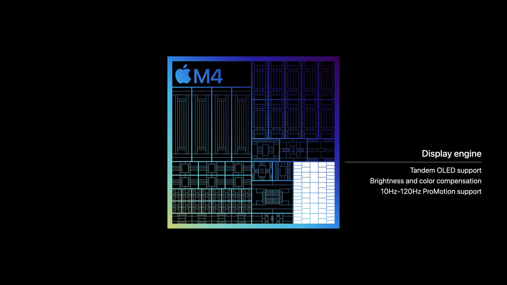

<!doctype html>
<html lang="en">
    <head>
        <meta charset="utf-8">
        <title>Building FPGA-based Machine Learning Accelerators in Python</title>
        <link rel="stylesheet" href="assets/dist/reveal.css">
        <link rel="stylesheet" href="assets/dist/theme/white.css" id="theme">
        <link rel="stylesheet" href="assets/plugin/highlight/monokai.css">
        <script async src="https://www.googletagmanager.com/gtag/js?id=G-PJBFEVM4RY"></script>
        <script>
          window.dataLayer = window.dataLayer || [];
          function gtag(){dataLayer.push(arguments);}
          gtag('js', new Date());
          gtag('config', 'G-PJBFEVM4RY');
        </script>
        <style>
            .reveal .smallfont {
                font-size: 18px;
            }
        </style>
    </head>
    <body>
        <div class="reveal">
            <div class="slides">
                <section data-markdown>
                    <script type="text/template">
                        <!-- .slide: data-background-image="assets/img/cubist/lightbg.png" -->
                        <!-- .slide: style="color: white" -->
                        <h3 style="color: white;">Machine Learning Accelerators</h3>
                        <h3 style="color: white;">in Python</h3>

                        <br />

                        <span style="color:white;">Tim Paine / <a style="color: white; text-decoration: underline;" href="https://github.com/timkpaine">@timkpaine</a></span>

                        <br />

                        <div style="display: flex; flex-direction: row; justify-content: space-evenly; align-items: center;">
                            <a href="https://point72.com/cubist/"></img></a>
                            <a href="https://www.cs.columbia.edu"></img></a>
                        </div>
                    </script>
                </section>
                <section>
                    <section data-markdown data-separator="---">
                        <script type="text/template">
                            

                            ---

                            ## Talk Overview

                            Background
                            <!-- .element: class="fragment" data-fragment-index="1" -->

                            Motivation
                            <!-- .element: class="fragment" data-fragment-index="2" -->

                            Examples - Precanned and From Scratch
                            <!-- .element: class="fragment" data-fragment-index="3" -->

                            Ecosystem and State of Open HW Dev
                            <!-- .element: class="fragment" data-fragment-index="4" -->
                        </script>
                    </section>
                </section>
                <section>
                    <section data-markdown data-separator="---">
                        <script type="text/template">
                            ## Background

                            How many people have programmed for:
                            <!-- .element: class="fragment" data-fragment-index="1" -->

                            CPU?
                            <!-- .element: class="fragment" data-fragment-index="2" -->

                            GPU?
                            <!-- .element: class="fragment" data-fragment-index="3" -->

                            Raspberry Pi / Arduino?
                            <!-- .element: class="fragment" data-fragment-index="4" -->

                            FPGA?
                            <!-- .element: class="fragment" data-fragment-index="5" -->

                            ---

                            ## Glossary

                            ---

                            CPU, GPU

                            **FPGA** - Field Programmable Gate Array
                            <!-- .element: class="fragment" data-fragment-index="1" -->

                            **ASIC** - Application Specific Integrated Circuit
                            <!-- .element: class="fragment" data-fragment-index="2" -->

                            ---

                            Accelerators

                            Cryptography, Compression, Network Processing
                            <!-- .element: class="fragment" data-fragment-index="1" -->

                            Graphics, Motion, Neural Engine, AI
                            <!-- .element: class="fragment" data-fragment-index="2" -->

                            ASICs / CoProcessors
                            <!-- .element: class="fragment" data-fragment-index="3" -->

                            FPGA
                            <!-- .element: class="fragment" data-fragment-index="4" -->

                            SmartNIC - Smart Network Interface Controller
                            <!-- .element: class="fragment" data-fragment-index="5" -->

                            DPU - Data Processing Unit
                            <!-- .element: class="fragment" data-fragment-index="6" -->

                            ---

                            SoC - System-on-chip

                            ---

                            <div style="display: flex; flex-direction: column; align-items: center">
                                <div style="display: flex; flex-direction: row">
                                    
                                    
                                </div>
                                <div style="display: flex; flex-direction: row">
                                    
                                    
                                </div>

                            </div>

                            &#169; Apple Inc.

                            ---

                            ## FPGA and SoC Manufacturers

                            | | | |
                            |:--|:--|:--|
                            |  |    | <span style="font-size: 30px;">Agilex, Stratix, Arria, Cyclone</span> |
                            |  |    | <span style="font-size: 30px;">Virtex, Kintex, Artix, Spartan, Zynq</span> |
                            |  |   | <span style="font-size: 30px;">iCE40</span> |
                            <!-- .element: class="fragment" data-fragment-index="1" -->

                            | | | |
                            |:--|:--|:--|
                            |  |  |  |
                            <!-- .element: class="fragment" data-fragment-index="2" -->

                            and more...
                            <!-- .element: class="fragment" data-fragment-index="2" -->

                            ---

                            ### Board and Module Manufacturers

                            | | | |
                            |:--:|:--:|:--:|
                            |  |  |  |
                            |  |  |  |
                            |  |  |  |

                            and more...

                            ---

                            ### Developing hardware designs

                            Development
                            <!-- .element: class="fragment" data-fragment-index="1" -->

                            Simulation and Testing (Verification)
                            <!-- .element: class="fragment" data-fragment-index="2" -->

                            Sythesis
                            <!-- .element: class="fragment" data-fragment-index="3" -->

                            Process Design
                            <!-- .element: class="fragment" data-fragment-index="4" -->

                            SoC Building (Part of Development)
                            <!-- .element: class="fragment" data-fragment-index="5" -->

                            ---

                            ## Development

                            | | |
                            |:--:|:--|
                            | | Verilog |
                            | | SystemVerilog |
                            | | VHDL |
                            | | [SystemC](https://systemc.org) |
                            | | [Chisel](https://www.chisel-lang.org)) |
                            | | [Clash](https://clash-lang.org) |
                            | | [MyHDL](https://www.myhdl.org) |
                            | | [Amaranth](https://github.com/amaranth-lang/amaranth) |
                            | | [migen](https://github.com/m-labs/migen) |

                            ---

                            ### Verification

                            | | | |
                            |:--:|:--|:--|
                            |  | Xcelium/Jasper SuperLint | P |
                            |  | ModelSim/QuestaSim/QuestaLint | P |
                            |  | VCS/SpyGlass | P |
                            |  | Quartus | P |
                            |  | Vivado | P |
                            |  | Verilator | OSS |
                            |  | cocotb | OSS |
                            |  | Verible | OSS |

                            ---

                            ## Synthesis

                            | | | |
                            |:--:|:--|:--|
                            |  | Vivado | P |
                            |  | Quartus | P |
                            |  | Stratus HLS | P |
                            |  | Synphony HLS | P |
                            |  | Vitis HLS | P |
                            |  | Intel HLS | P |
                            |  | yosys | OSS |

                            ---

                            ## Process Design

                            | | | |
                            |:--:|:--:|:--:|
                            |   |  |  |
                            |   |  |  |

                            90nm+ (compare to Apple M4 on TSMC 2nm)
                            <!-- .element: class="fragment" data-fragment-index="1" -->

                            ---

                            ## SoC Design

                            | | |
                            |:--:|:--|
                            | | [Amaranth](https://github.com/amaranth-lang/amaranth) |
                            | | [LiteX](https://github.com/enjoy-digital/litex) |

                        </script>
                    </section>
                </section>
                <section>
                    <section data-markdown data-separator="---">
                        <script type="text/template">
                            Perspectives?

                            (We'll come back at the end)
                            <!-- .element: class="fragment" data-fragment-index="1" -->

                            ---

                            So what can you actually do in

                            ---

                            ~~2015~~

                            ---

                            *2020*

                            ---

                            **2024**

                            A lot!
                            <!-- .element: class="fragment" data-fragment-index="1" -->

                            ---

                            FPGA Development boards?

                            As expensive as always!
                            <!-- .element: class="fragment" data-fragment-index="1" -->

                            \$500+
                            <!-- .element: class="fragment" data-fragment-index="2" -->

                            ---

                            ### "School Boards" - $300

                            | | |
                            |:--:|:--|
                            |  | [Digilent Arty A7](https://digilent.com/shop/arty-a7-100t-artix-7-fpga-development-board/) |
                            | | [Terasic DE1](https://www.terasic.com.tw/cgi-bin/page/archive.pl?Language=English&CategoryNo=165&No=836#contents)

                            ---

                            But this is PyCon, and your the talk description said <$200!

                            ---

                            So let's talk about

                            
                            <!-- .element: class="fragment" data-fragment-index="1" -->

                        </script>
                    </section>
                </section>
                <section>
                    <section data-markdown data-separator="---">
                        <script type="text/template">
                            

                            ---

                            Started ~2016 by Xilinx

                            Zynq (FPGA + Arm) + Python
                            <!-- .element: class="fragment" data-fragment-index="1" -->

                            [Docs](https://pynq.readthedocs.io/en/latest/) / [Forum](https://discuss.pynq.io/)
                            <!-- .element: class="fragment" data-fragment-index="2" -->

                            ---

                            

                            &#169; Advanced Micro Devices, Inc.

                            ---

                            | | |
                            |:--:|:--:|
                            | |  |

                            [$129](https://www.newark.com/tul-corporation/1m1-m000127dev/tul-pynq-z2/dp/13AJ3027?st=pynq%20z2)

                            ---

                            ## tl;dr

                            ```python
                            import numpy as np
                            from pynq import allocate, Overlay

                            ol = Overlay('example.bit')

                            input_buffer = allocate(shape=(5,), dtype=np.uint32)
                            output_buffer = allocate(shape=(5,), dtype=np.uint32)

                            for i in range(5): input_buffer[i] = i

                            ol.axi_dma.sendchannel.transfer(input_buffer)
                            ol.axi_dma.recvchannel.transfer(output_buffer)
                            ol.axi_dma.sendchannel.wait()
                            ol.axi_dma.recvchannel.wait()
                            ```

                        </script>
                    </section>
                </section>
                <section>
                    <section data-markdown data-separator="---">
                        <script type="text/template">
                            ## Q/A

                            <span>Tim Paine / <a style="text-decoration: underline;" href="https://github.com/timkpaine">@timkpaine</a></span>

                        </script>
                    </section>
                </section>
            </div>
        </div>
        <script src="assets/dist/reveal.js"></script>
        <script src="assets/plugin/markdown/markdown.js"></script>
        <script src="assets/plugin/highlight/highlight.js"></script>
        <script src="assets/plugin/notes/notes.js"></script>
        <script src="assets/plugin/math/math.js"></script>
        <script>
            Reveal.initialize({
                center: true,
                controls: true,
                history: true,
                plugins: [ RevealMarkdown, RevealHighlight, RevealNotes, RevealMath ],
                progress: true,
                slideNumber: true
            });
        </script>

    </body>
</html>
